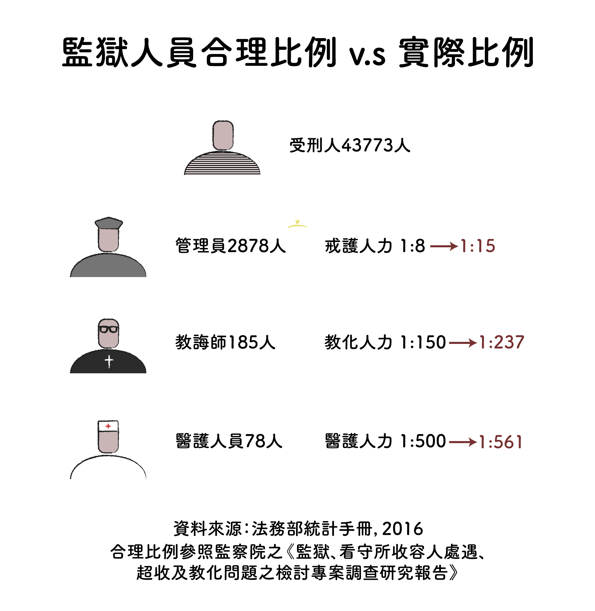

NTU Jornalism
專題首頁
資訊圖表
VR
我國《監獄行刑法》第1條規定：「監禁的目的，以使受刑人改悔向上，適於社會生活為目的。」然而，台灣卻有八成的受刑人出獄後會再回去。
他們都是什麼樣的人？為了什麼原因在這裡？ 只有0.46坪可以生活的時候，犯錯的人，還有沒有懺悔的餘地？

數據透露了台灣監獄超額收容的困境，而每張圖表背後，都是一則則真實故事，等待人們關注。
究竟監獄超額收容的原因是什麼？專家學者的說法，何者才能有效解決超收？隨著擴建與增床計畫如火如荼地展開，問題是否能迎刃而解？
深度報導《懺悔的餘地──台灣監獄超額收容困境》